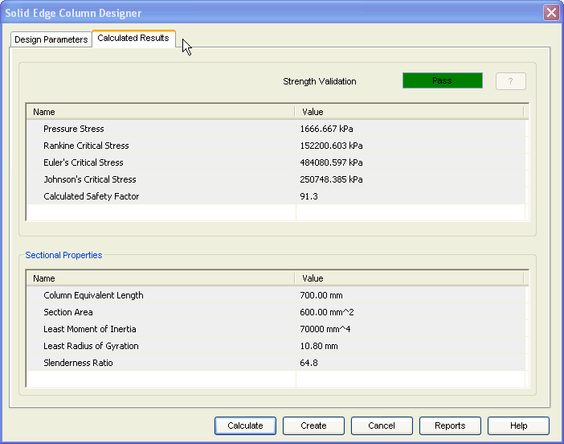

Column Calculated Results tab
The Calculated Results tab provides the options you use to view the results of the calculations. This tab has 2 areas.

- Strength Validation
-
Displays the overall performance of the column in terms of Pass/Fail. You can also review the various stress values and the calculated safety factor displayed in this area.
- Sectional Properties
-
Use this area to view the additional results related to the section. Some of the important parameters are least moment of inertia, least radius of gyration and slenderness ratio.
Note:
Use the ? button to access the Strength Validation Failure window which displays the design failure reasons in case strength validation fails.